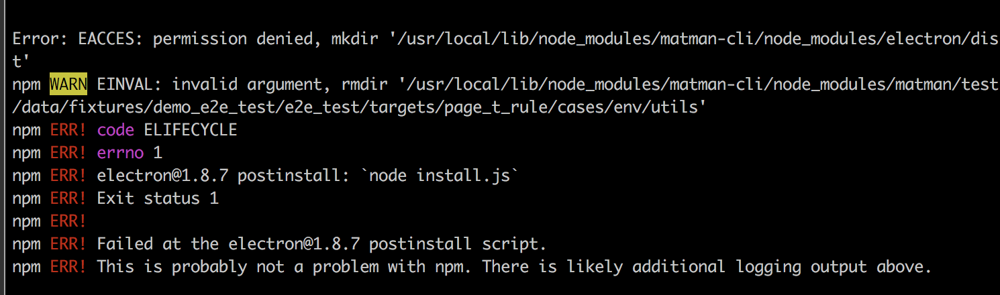

常见问题
1. permission denied
在 mac 电脑上，全局安装 matman-cli 时，需要用 sudo，即
$ sudo npm install matman-cli -g
另外，还可能会遇到另外一种情况，就是由于 electron 带来的权限问题，详见 https://github.com/matmanjs/matman-cli/issues/30。

请使用如下命令安装：
$ npm install matman-cli -g --unsafe-perm=true --allow-root